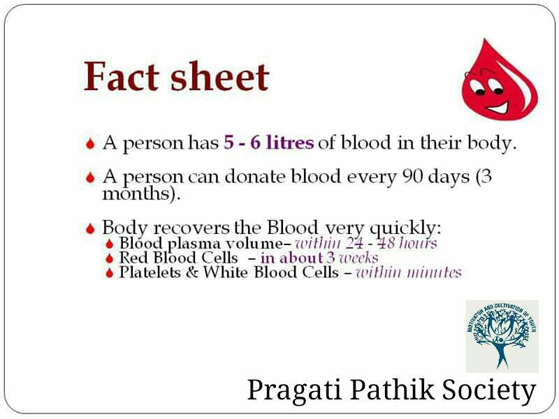
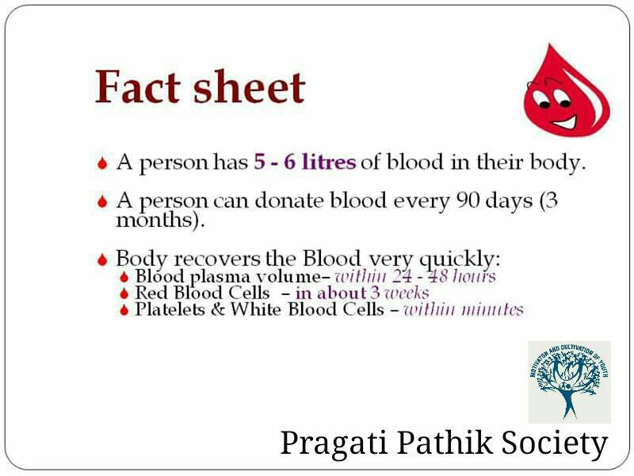

The blood donation process from the time you arrive until the time you leave takes about an hour. The donation itself is only about 8-10 minutes on average.


 


.., also known as blood types, play a crucial role in transfusion
medicine and determining compatibility between donors and recipients. There are four main blood groups: A, B, AB,
and O, each characterized by the presence or absence of specific antigens on the surface of red blood cells.
Blood Group A: Individuals with blood group A have the A antigen on their red blood cells and produce antibodies
against the B antigen. They can receive blood from donors with blood group A or O and can donate to individuals
with blood groups A or AB.
Blood Group B: Individuals with blood group B have the B antigen on their red blood cells and produce antibodies
against the A antigen. They can receive blood from donors with blood group B or O and can donate to individuals
with blood groups B or AB.
Blood Group AB: Individuals with blood group AB have both the A and B antigens on their red blood cells and do not
produce antibodies against either antigen. They are considered universal recipients as they can receive blood from
donors with any blood group (A, B, AB, or O) but can only donate to individuals with blood group AB.
Blood Group O: Individuals with blood group O do not have the A or B antigens on their red blood cells but produce
antibodies against both A and B antigens. They are considered universal donors as they can donate blood to
individuals with any blood group (A, B, AB, or O), but they can only receive blood from donors with blood group O.
In addition to the ABO blood groups, another critical factor in blood compatibility is the presence or absence of
the Rh antigen. Individuals who have the Rh antigen are Rh-positive (e.g., A+, B+, AB+, O+), while those who lack
the Rh antigen are Rh-negative (e.g., A-, B-, AB-, O-). Rh-negative individuals can receive Rh-negative or
Rh-positive blood, but Rh-positive individuals can only receive Rh-positive blood.
Understanding blood groups is vital in blood transfusions, as mismatched blood types can lead to severe reactions
and complications. Therefore, accurate identification and matching of blood groups are essential to ensure safe
and successful transfusions.

There are several important reasons why donating blood is
a valuable and life-saving act:
1. Save Lives: Donating blood can help save lives. Blood transfusions are vital for patients undergoing surgeries,
experiencing medical emergencies, or suffering from conditions such as cancer, anemia, and blood disorders. By
donating blood, you provide a crucial resource that can be used to treat and sustain individuals in need.
2. Meet Demand: Blood is a precious resource that has a limited shelf life. There is a constant demand for blood
due to medical procedures, accidents, and other emergencies. Regular blood donations are necessary to ensure an
adequate and readily available blood supply for hospitals and healthcare facilities.
3. Health Benefits for Donors: Blood donation offers health benefits for the donors themselves. It stimulates the
production of new blood cells, which can help maintain good health. Regular blood donation may reduce the risk of
certain illnesses, such as iron overload, heart diseases, and certain types of cancers.
4. Free Health Check-up: Blood donation often involves a screening process where your blood is tested for various
health parameters, including blood type, hemoglobin levels, infectious diseases, and more. This provides an
opportunity to receive a free health check-up and get insights into your own well-being.
5. Community Contribution: Donating blood is a selfless act that contributes to the welfare of the community. It
brings people together, fosters a sense of unity and compassion, and strengthens the bond among individuals. By
donating blood, you actively participate in improving the health and well-being of others.
6. Emergency Preparedness: Blood donations play a crucial role in emergency preparedness and disaster response.
During natural disasters, accidents, or large-scale emergencies, the need for blood increases significantly. By
donating blood regularly, you contribute to building a robust and prepared healthcare system that can effectively
respond to such situations.
7. Personal Fulfillment: Blood donation is an opportunity to make a meaningful impact on someone's life. Knowing
that your donation has the potential to save or improve the lives of others can bring a sense of fulfillment,
pride, and satisfaction.
Remember, before donating blood, it is important to ensure that you meet the eligibility criteria set by blood
banks and healthcare organizations. These criteria usually include age, weight, overall health, and lifestyle
factors.
By donating blood, you become a crucial link in the chain of lifesaving transfusions, providing hope and support
to individuals in their time of need.

Donating blood is a simple yet impactful act of kindness that can save
lives. Here are a few steps to guide you through the process:
Check eligibility: Ensure that you meet the basic eligibility criteria for blood donation, including age, weight,
overall health, and any specific requirements set by your local blood donation center.
Find a donation center: Locate a reputable blood donation center or blood drive near you. Hospitals, clinics, and
blood banks often organize donation events. Check their website or contact them for information on dates, times,
and requirements.
Prepare yourself: On the day of donation, have a good meal and stay hydrated. It's important to have enough iron
in your diet for optimal blood health. Wear comfortable clothing with sleeves that can be easily rolled
up.
Registration and screening: At the donation center, you'll be asked to complete a registration form and undergo a
brief medical screening. They will ask you questions about your health history, travel, medications, and other
relevant factors to ensure the safety of the recipient.
Health assessment: A healthcare professional will check your vital signs such as blood pressure, pulse, and
temperature. They will also conduct a simple hemoglobin test to ensure you have enough iron in your blood for
donation.
Donation process: If you meet all the requirements, you'll be taken to a donation area. A sterile needle will be
inserted into a vein in your arm, and blood will be collected in a sterile bag. This process usually takes around
10-15 minutes.
Rest and refreshments: After donation, take a few minutes to rest and have some refreshments provided by the
donation center. This helps your body recover and maintains your blood sugar level.
Post-donation care: Follow the instructions provided by the healthcare professional regarding post-donation care.
Drink plenty of fluids for the next few hours, avoid heavy lifting or strenuous activities, and keep the bandage
on your arm for the recommended time.
Remember, donating blood can make a significant difference in someone's life. By donating regularly, you can
become a valuable contributor to the health and well-being of others in need.

From a humble computer center at Capri Trade Center,
Graphic Era has grown into a prestigious educational organization with two universities across four
campuses, shaping industry-ready professionals. The institution's commitment to quality education, research, and
leadership development has earned it a strong reputation.
Inspired by a philanthropic desire, Prof. (Dr.) Kamal Ghanshala, Chairman of Graphic Era Group, established
Graphic Era Hospital/GEIMS—a super-specialty hospital aiming to provide world-class, patient-centric healthcare
in Uttarakhand and become a center of excellence for medical research in India.
Efficiency, compassion, excellence, consistency, trust, and accountability form the core values of Graphic Era
Hospital/GEIMS. They strive to optimize resources, treat patients with respect and dignity, surpass
expectations, ensure consistency in care, prioritize health and safety, and take responsibility for their
actions.
The mission of Graphic Era Hospital/GEIMS is to become the most trusted institution for healthcare and medical
education in Uttarakhand. They aim to provide high-quality patient care, establish state-of-the-art
infrastructure, nurture skilled medical practitioners, and contribute to charitable endeavors.
The vision of Graphic Era Hospital/GEIMS is to make affordable, quality patient care accessible to all and
produce competent and ethical medical professionals.
Through its brand legacy, Graphic Era continues to evolve as an esteemed educational institution and healthcare
provider, dedicated to the progress and well-being of society.